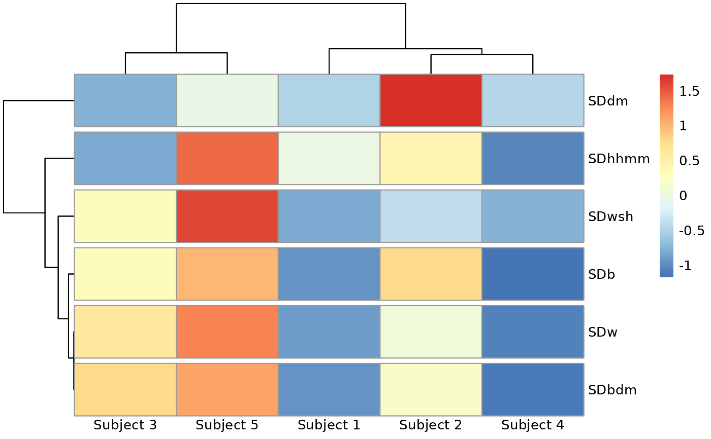

Create a heatmap of metric values by subject based on hierarchical clustering order
Source:R/heatmap.R
metrics_heatmap.RdCreate a heatmap of metric values by subject based on hierarchical clustering order
Usage
metrics_heatmap(
data = NULL,
metrics = NULL,
metric_cluster = 6,
clustering_method = "complete",
clustering_distance_metrics = "correlation",
clustering_distance_subjects = "correlation"
)Arguments
- data
DataFrame object with column names "id", "time", and "gl".
- metrics
precalculated metric values, with first column corresponding to subject id. If 'NULL', the metrics are calculated from supplied 'data' using
all_metrics- metric_cluster
number of visual metric clusters, default value is 6
- clustering_method
the agglomeration method for hierarchical clustering, accepts same values as
hclust, default value is 'complete'- clustering_distance_metrics
the distance measure for metrics clustering, accepts same values as
dist, default value is 'correlation' distance- clustering_distance_subjects
the distance measure for subjects clustering, accepts same values as
dist, default value is 'correlation' distance
Examples
# Using pre-calculated sd metrics only rather than default (all metrics)
mecs = sd_measures(example_data_5_subject)
metrics_heatmap(metrics = mecs)
